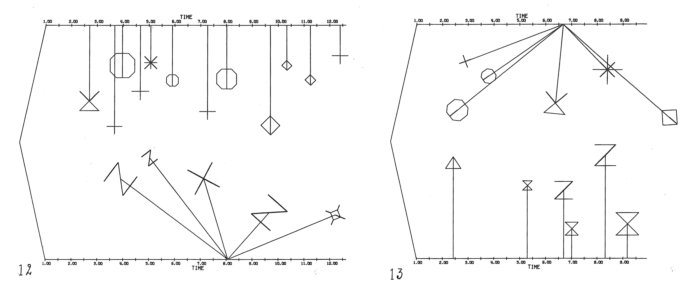

"Jeremy Muller’s solo percussion album, Within the Within presents a unique collection of compositions beautifully performed and richly captured to create a captivating experience for every percussion student or aficionado. In particular, his gorgeously rendered 'Stalks and Trees and Drops and Clouds' brings to life an under appreciated masterwork of Herbert Brün that merits study and reflection."
Within the Within is Jeremy Muller's debut solo percussion album. It represents many of his interests in percussion and is the culmination of years of work. The album includes three world premieres by Matthew Burtner, Alexandre Lunsqui, and Cristyn Magnus. It also includes a couple of classic percussion works like Javier Alvarez‘s “Temazcal” (the American recording premiere) and Herbert Brün’s graphic score “Stalks and Trees and Drops and Clouds” (the recording premiere) with liner notes on the Brün by Allen Otte of PAS Hall of Fame Percussion Group Cincinnati. The album is named for Lunsqui’s work, “Materiali: Dentro do dentro.”
Materiali: Dentro do dentro (Lunsqui) is a wonderful exploration of material textures and microsounds that require amplification. The instruments are entirely found objects of various material types such as clay, plastic, metal, water, air, rocks, and wood.
Temazcal (Alvarez) is a staple in the percussion world and a work for maracas and electroacoustic sounds. After my doctoral research on Venezuelan maracas styles and having the opportunity to study with virtuosos like Manuel Rangel and Juan Ernesto Laya, my realization of this piece was largely inspired by my intimate journey with maracas over the past 15 years.
Pitch vs Computer (Magnus) is a video game score controlled by the musical instrument. Magnus explores video games as a concept in order to generate meaningful interactive electronic sounds into a solo concert work. The musician is presented with the dichotomy of winning the game vs making musical decisions. It’s ultimately a battle against the instrument and the computer.
Stalks and Trees and Drops and Clouds (Brün) was one of the very first computer-aided solos for percussion ever written. Brün uses the Calcomp pen plotter to create three graphic scores for solo percussion and this piece is one of them. See below for examples of this graphic score.
Glisten of Places (Burtner) is a beautiful meditative work for percussion and geotagged soundscapes. Burtner recorded many field recordings of rare and unheard sounds, like inside a fire ant hill, lava flow, glaciers melting, orcas traveling at sea above and below the water simultaneously, coral reef, and more. Encoded in the percussion part are the GPS coordinates of each sound.
Clarke Rigsby (recording, mixing, editing)
Nathan James (mastering)
Casey Farina (album art work)
Partial funding from Arizona Commission on the Arts Research & Development Grant

Excerpt from Stalks and Trees and Drops and Clouds.
The innovative Jeremy Muller is active as a percussionist, composer, and multimedia artist. He has performed as a featured soloist at
many venues throughout the United States, Canada, and Australia including Transplanted Roots (Australia), International Computer Music Conference, The Banff Centre for the Arts (Canada), MoxSonic, ZeroSpace (University of Virginia), Northern Illinois University, Balance-Unbalance International Conference, the MIM, and PASIC.
He has given world premieres of works by many composers including Matthew Burtner, Alexandre Lunsqui, and an evening-length tour de force solo work by Stuart Saunders Smith. As a composer, his music has been performed by Projeto Arcomusical, Arizona Contemporary Music Ensemble, Sam Houston State University, UNC Pembroke, GCC Percussion Ensemble, and many other universities across the U.S. Some of his research and publications can be found through Bachovich Music Publications & Percussive Notes.